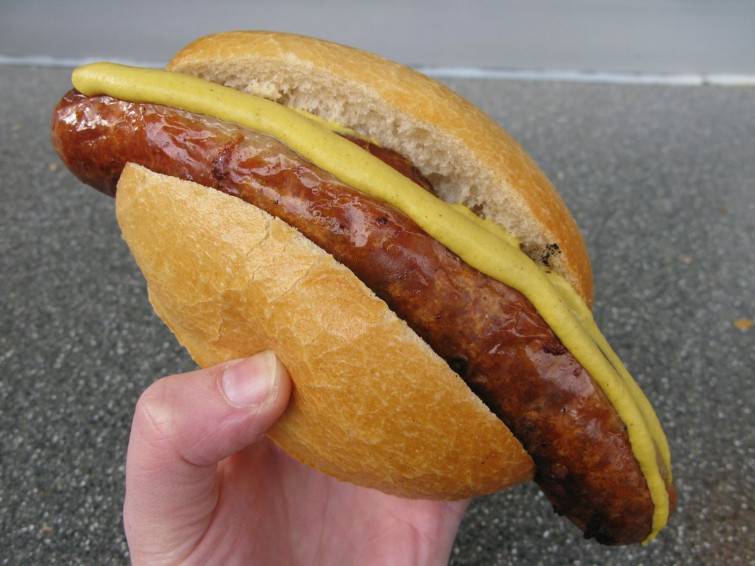

En la entrada de este post os mostraré cómo se puede degustar comida típica y tradicional de Berlín sin necesidad de ir a ningún restaurante.
Corría el año 2015 cuando tuve la oportunidad de visitar Berlín, y, pese a que la ciudad estaba muy bonita vestida de blanco debido a la nieve, sin duda alguna lo que no puedes dejar escapar si te dejas caer por allí es su comida tradicional.
Desde el puestecito más pequeño de una esquina al lado del muro de Berlín hasta el restaurante más sofisticado, la capital de Alemania nos ofrece, a su vez, un viaje por nuestras papilas gustativas que nos dejará con ganas de volver solo por la comida. Porque hay mucha gente que piensa que los típicos puestos de comida, regentados por un señor/a únicamente, pensamos que puede ofrecernos algo para salir del paso y que para nada tendrá valor nutricional, que es mera “comida basura”. Pues déjame decirte a ti, lector, que quizás sea por el país o su filosofía de vida pero, ¡¡hasta la comida de los puestos es comida tradicional!! (Aunque beban agua con gas que, eso es otro rollo…)
¡Aterrizamos!
Con nuestra llegada a Berlín, no podremos dejar pasar la oportunidad de dar un estupendo paseo en ferry a través del
río Spree pasando cerca del maravilloso Bode Museum, llamado originalmente "Kaiser-Friedrich-Museum"
en honor al emperador alemán Federico III. Qué mejor que apreciar estupendas y muy bien conservadas obras de arte y
esculturas de la cultura egipcia, bizantina y numismática.
Otra de nuestras parada prácticamente obligatoria es la del muro de Berlín. Aunque este muro se levantó con fines políticos
(en los cuales no entraremos en este post) con la caída de éste el 9 de Noviembre de 1989 se pasó a la reunificación, tras
décadas, de Alemania. Si no queremos perdernos algo de lo más emblemático de Berlín, tenemos que pasear un buen rato a lo
largo de este muro, admirando la diversidad de graffitis que hay.
Sin duda tiene paisajes muy bonitos y hay otros rincones turísticos donde tenemos que dejarnos caer sí o sí.
Pero el motivo de este post y, por tanto, por lo que estás aquí, es la comida. Y es que cerca de cada uno de estos
lugares mencionados anteriormente podemos encontrar puestecitos de "comida callejera" que no deja de ser comida
tradicional de las calles de de Alemania. Una comida que te puedes encontrar perfectamente en un resturante,
elaborada de manera más sofisticada. Pero hago mi post sobre esto ya que considero que visitar la ciudad pudiendo
degustar estos manjares, es una opción 10/10.
La mejor comida callejera de Berlín

Bratwurst
Y sí, todo eso es muy bonito, pero aquí es donde encontraréis el apartado que os interesa, el papeo. Bien, pues cerca de la
preciosa creación del Bode Museum tenemos otra de categoría similar. En efecto, estoy hablando de las deliciosas "Bratwurst".
Uno de los alimentos callejeros más populares en Alemania es el bratwurst. Son un tipo de salchicha fresca, típicamente hecha
con carne de cerdo y ternera y sazonada con jengibre, nuez moscada, cilantro o alcaravea. Se sirve a la parrilla con la piel
ligeramente crujiente y cargado con mostaza y ketchup. También se puede tomar con chucrut y mostaza, o simplemente en un
panecillo. A menudo se asan sobre puestos de barbacoa en toda Alemania, especialmente en verano.
Lo bueno de Alemania es que son muy muy muy típicas, entonces según el puestecillo al que acudas, tendrás de un sabor o ingredientes diferentes.
Aunque no lo creas, ¡hay gran variedad!
Pretzel
La típica galleta salada (o no) horneada con forma de lazo. Seguramente la habrás visto en algún capítulo de los Simpsons, o en
algunos dibujos animados, incluso en películas. Aunque por lo general aquí en España (las que probé yo) son de un tamaño inferior
a la palma de mi mano, cuando llegué a Berlín y probé un Pretzel tradicional de allí... Aluciné. Su tamaño es como 4 veces más, por
lo que si has de pedir, créeme, con uno te bastará.
Sus principales ingredientes son harina de trigo, leche, mantequilla y un poquito de levadura. Aunque su sabor por defecto sea salado,
existen algunas variantes dulces que llevan canela, vainilla, etc. Yo probé las típicas saladas y créeme, para un matahambre mientras
paseas por Berlín, te sacará de un apuro.
Eso sí, lleva agua contigo si no quieres morir en el intento.
Para qué perder tiempo en un restaurante pudiendo comer en la calle.
Sé que la comida que puedas probar en un restaurante quizás le haga sombra a la comida que te puedas encontrar por la calle,
pero déjame decirte que en este caso te sorprenderá y muy para bien. Berlín es una ciudad preciosa así que personalmente te
animo a que le des un tiento y pruebes mi método.
(También he de decir que estuve muy poquito en la ciudad y tuve que verlo todo deprisa y corriendo, por eso me fascinó tanto).
Aunque si aun te apetece algo de dulce, podrás encontrar puestecillos en la calle que venden estas deliciosas y apetecibles
Berliner Pfannkuchen (sí, el nombre no es nada facilito). Unos bollos generalmente con un relleno de crema o mermelada y
recubiertos por un glaseado.
Yo estos los probé en un restaurante, y me has de disculpar porque no recuerdo el nombre. Yo no suelo ser mucho de dulce,
así que si te digo que me comí dos... ¡Ya puedes imaginar cómo están!
No pierdas la ooportunidad
Te aconsejo que si estabas esperando hacer un viaje a Berlín, te aconsejo que lo hagas cuando llegue el frío. Además que la ciudad
está mucho más bonita con nieve, ese ambiente de luces por la noche acompañado de una buena comida callejera paseando por las blancas
calles de Berlín, es un placer que toda persona debería vivir, al menos una vez en la vida.
Espero que te haya servido este post, al menos para que hayas visto la comida callejera sí puede tener un hueco en tus planes de viaje.
Tendemos a pensar que es de peor calidad o que carece prácticamente de valor nutricional aunque, será por el país o la cultura, pero
créeme que la de allí merece muchísimo la pena para ir de aquí para allá y no perderte ni un rincón de Alemania.